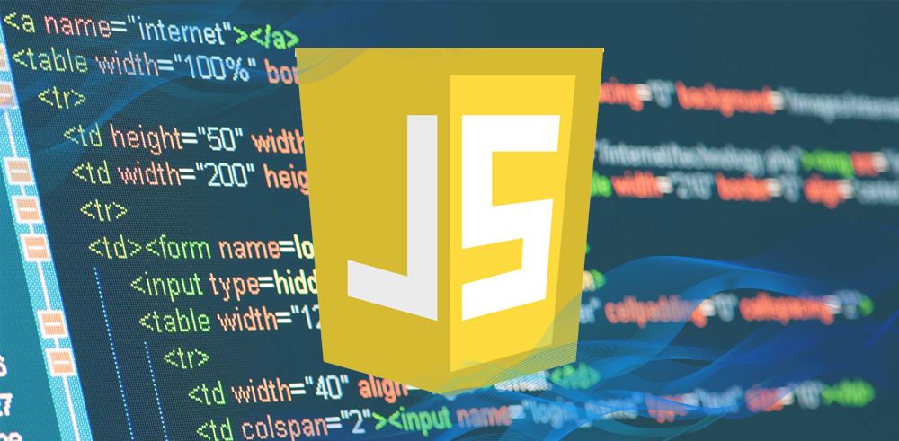
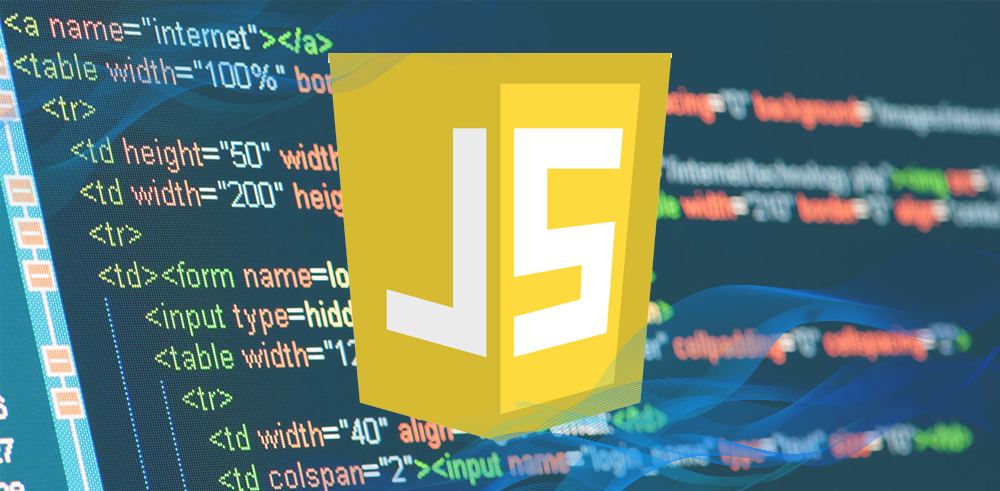

Lenguajes mas usados
Gracias a la continua evolución del mundo tecnológico, cada día se desarrollan nuevos dispositivos o se actualizan los ya existentes.
Para que estos dispositivos funcionen, son necesarias aplicaciones, las cuales necesitan lenguajes de programación para lograr una buena comunicación hombre-máquina.

Un lenguaje de programación es un sistema de signos para comunicar individuos; se trata de un conjunto de instrucciones que permite la interacción de los humanos con las computadoras.
Lenguajes de programación más usados:
1. Python
Python es de código abierto, con una sintaxis simple y sencilla de entender, quizá el más fácil de este listado. Es idóneo para iniciarse en el mundo de la programación. Es muy versátil por lo que tiene múltiples áreas de aplicación como: inteligencia artificial, Big Data y desarrollo web.2. Java
Este lenguaje orientado a objetos funciona independientemente de la plataforma de hardware, entonces, el código escrito en una máquina corre en otra, sin problemas. Incluso, si los sistemas operativos son diferentes, el código Java funciona gracias a la Máquina Virtual Java o JVM, por las siglas en inglés.Su ámbito de aplicación es tan amplio, que existe software desarrollado para puntos de ventas, cajeros automáticos, internet de las cosas, dispositivos móviles, aparte de páginas web con este lenguaje.
3. JavaScript
Otro lenguaje de programación orientado a objetos. Como es interpretado, no necesita compilación, entonces los navegadores leen el código y ejecutan las acciones indicadas. Esta característica, lo hace idóneo para crear páginas o aplicaciones web, con elementos interactivos o más visuales, de allí su relevancia en el desarrollo de videojuegos. 
